A program that helps us in our presentation.

Step1 Step2 Step3
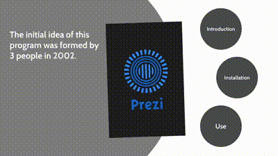
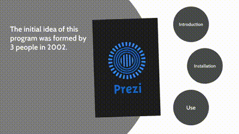
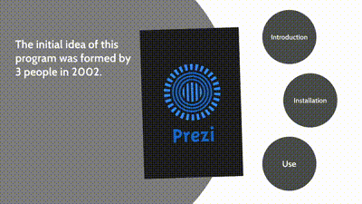
Introduction
Prezi means presentation; The initial idea of Perzi was formed in 2002 by a group of 3 people in Hungary.
Prezi presents with a new point of view, which causes the growth of this software. In 2011,
in addition to Windows, Prezi was also released for iOS, which made it popular.
Prezi is used in the following two principles
Education Business


Despite all this, Prezi comes in two online versions that keep the presentations in your account dashboard and an offline version
that is placed on your desktop and saves your presentations on your system. One of the effective features of Prezi is video
prezi,
which produces a presentation from the slides you made, the content you plan to present, and your image.
Companies and lectures that use Prezi

Comparison of Prezi and Powerpoint


One of the most important differences between them is that Perzi gives you freedom of movement according to your design and
presentation, but the progress in the PowerPoint slides is linear and without creativity, which makes the viewer tired.
Another advantage of Prezi compared to PowerPoint is that the format of the Prezi file is EXE and it can be run without
installing the Prezi program, but PowerPoint must be purchased and installed.
Installation
Step1(Setup)
.gif)
Step2(Crack)

Step3(Signup)
www.prezi.com
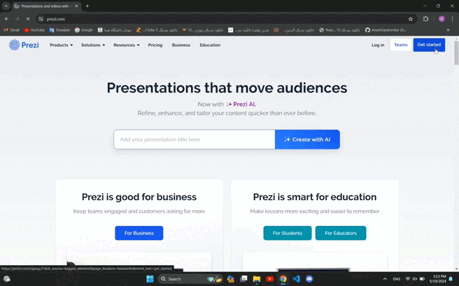
Step4(Login)
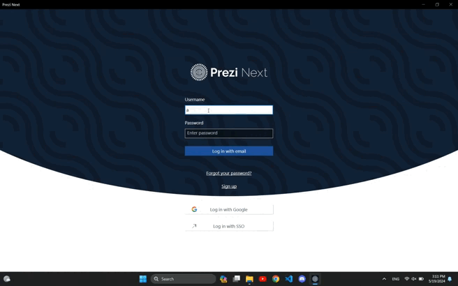
Step5(Firewall)
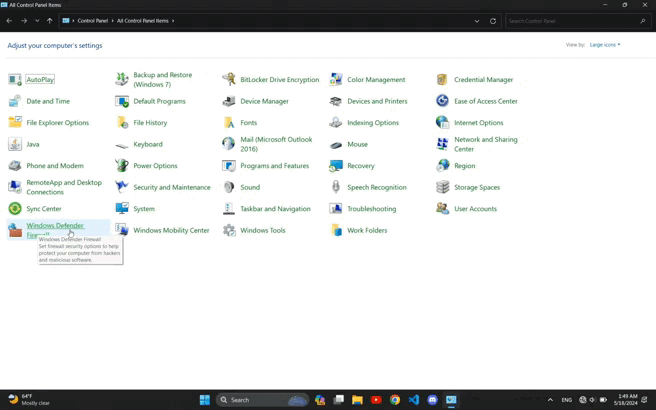
Step6(New Rule)
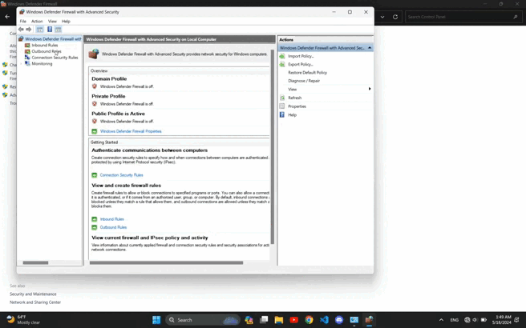
How to use
Create presentation
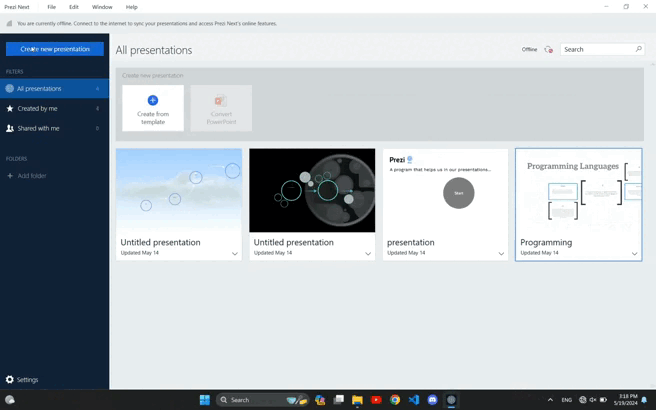
Add topic
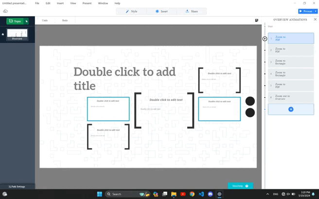
Add animation
Insert(Text,Image,..)
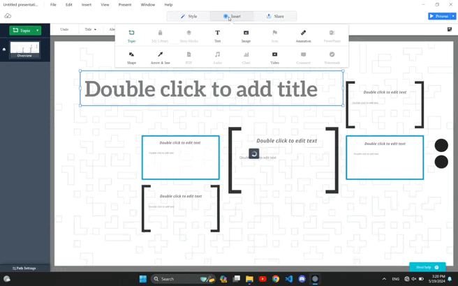
Undo/Redo
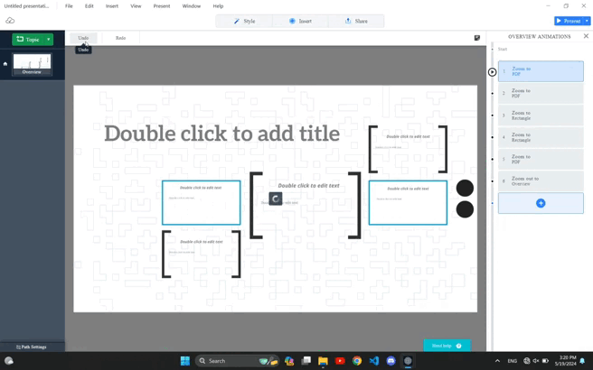
Decrease size
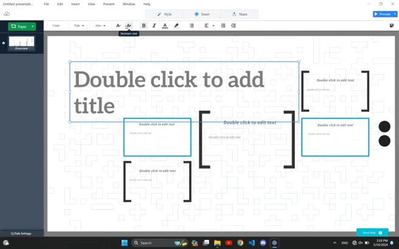
Increase size
Make Bold
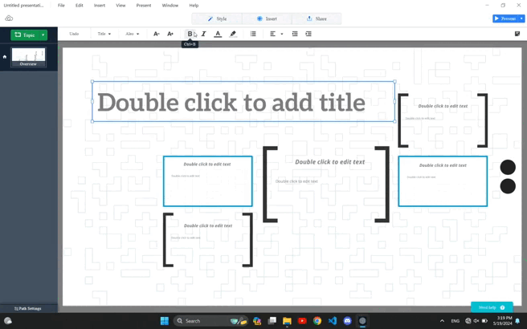
Change to Italic
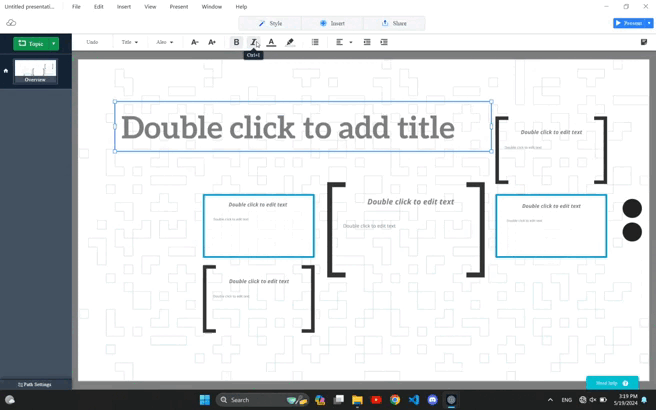
Change color
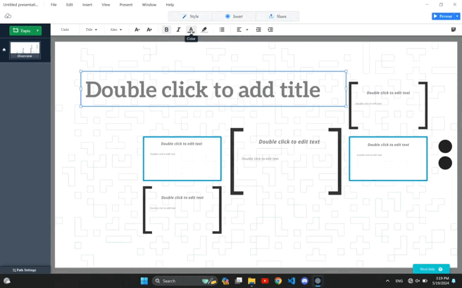
Change background's color
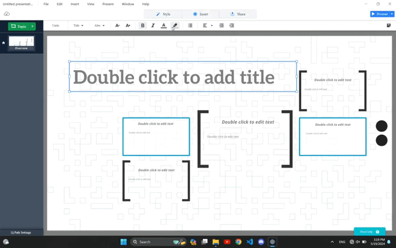
Left/Center/Right
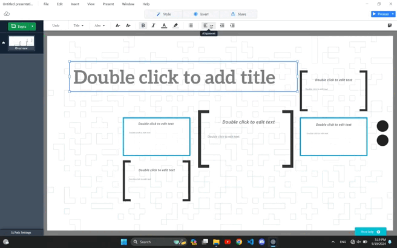
Left indentation

Right indentation

Export file
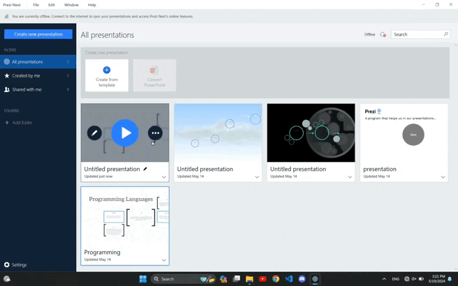
Connect with me


Produced by Arash Gandomkar